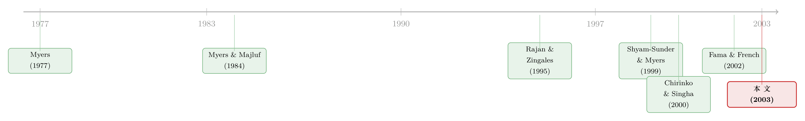

啄食顺序理论的滑铁卢：当「该发债」的公司，偏偏去发了股
本文读的是 Frank & Goyal (2003, Journal of Financial Economics)：他们把 Shyam-Sunder 和 Myers 用 157 家公司检验「啄食顺序理论」的方法，搬到 1971–1998 年几乎全部美国上市公司上重做一遍，结论几乎翻转——净股权发行 (net equity issues) 比净债务发行 (net debt issues) 更紧地跟着「融资赤字」走，而这恰恰是啄食顺序理论最不该看到的画面。
1 一个太漂亮、所以值得怀疑的结果
公司缺钱的时候，先动用什么？
教科书会告诉你一个干净得近乎优雅的答案：啄食顺序理论 (pecking order theory)。它来自 Myers (1984) 和 Myers and Majluf (1984)：由于逆向选择 (adverse selection)，公司最偏爱内部留存收益，其次是债，最后才是股。原因不复杂——从外部投资者的角度看，股权严格比债权更「危险」，因为信息不对称在股权上造成的折价更狠。于是一个正常经营的公司，只要内部现金不够，就该一路先借债，把发股留到万不得已。
这套逻辑漂亮在哪？它把一家公司纷繁的融资行为，压缩成一句可检验的话。Shyam-Sunder and Myers (1999) 正是把这句话拧成了一个具体的回归：构造一个融资赤字 (financing deficit) 变量，再看净债务发行如何随它变化。如果公司真的遵循啄食顺序，那么赤字应该被债「一块钱对一块钱 (dollar-for-dollar)」地填上——回归斜率应该等于 1。
他们用 1971–1989 年间 157 家连续交易的公司做检验，结果斜率非常接近 1。一个高度简约、且描述上相当合理的资本结构模型，就这样诞生了。
但故事的张力也恰恰埋在这里。157 家，是从全部美国上市公司里挑出来的一小撮——而且是那种「能从 1971 年一直连续活到 1989 年」的公司。一个自然的问题是：这个漂亮结果，是啄食顺序理论本身的胜利，还是这撮特殊样本的产物？
Frank 和 Goyal 要做的，就是把这盏灯从 157 家公司的小圈子里端出来，照向一整片美国上市公司。
2 先看一眼「事实」：外部融资，远没那么次要
在跑任何回归之前，作者先做了一件朴素却关键的事——摆事实。
啄食顺序理论的影响力，很大程度上来自一组「人尽皆知」的图景：Myers (2001) 说，外部融资只占资本形成的一小部分，股权发行微不足道，外部融资里绝大多数是债。如果这幅图是真的，啄食顺序几乎不证自明。
可作者翻开数据，发现这幅图对 1980、1990 年代的美国上市公司根本不成立：
- 外部融资远比通常以为的重要，常常超过投资本身；
- 股权融资是外部融资里一个显著的组成部分；
- 平均而言，净股权发行往往超过净债务发行；
- 最刺眼的一点——净股权发行比净债务发行更紧地跟着融资赤字走。
最后这一句，几乎就是对啄食顺序理论的当面否定。理论说「赤字应该被债填上」，数据却说「赤字主要是被股填上的」。
3 识别策略：把一个会计恒等式，逼成一个可证伪的假设
这篇文章方法上的精巧，在于它没有去发明新工具，而是把对手最有力的检验，一层层加压，看它在什么时候塌。
3.1 融资赤字从哪来
一切从一个会计现金流恒等式 (accounting cash flow identity) 出发。记 DIV 为现金股利、I 为净投资、ΔW 为营运资本变动、C 为税后利息后现金流，ΔD、ΔE 分别为净债务、净股权发行。把流量数据部分加总，得到融资赤字：
注意：这本身只是个恒等式，左右两边必然相等，没什么可检验的。真正把它变成一个理论检验的，是下一步的回归设定：
$$ \Delta D_{it} \;=\; a \;+\; b_{PO}\,\mathrm{DEF}_{it} \;+\; e_{it} $$
啄食顺序理论的预言是 a = 0 且 b_PO = 1：赤字应当全部流向债务这一侧，发股只在 IPO 后的极端情形才动用。斜率离 1 越远，理论就越站不住。
这里藏着一个常被忽略的张力。恒等式里 ΔE 永远在场；可一旦你把它写成「ΔD 对 DEF 的回归」，就等于赌 ΔE 这一项小到可以忽略。Frank 和 Goyal 的核心发现，差不多就是在说：被你赌作「可忽略」的那一项，才是主角。
3.2 加压第一步：拆开赤字
如果赤字真的是一个有意义的整体，那么把它拆开 (disaggregate) 后，每个零件应当有同样的、单位为 1 的影响：
$$ \Delta D_{it} \;=\; a \;+\; b_{DIV}\,\mathrm{DIV}_t \;+\; b_{I}\,I_t \;+\; b_{W}\,\Delta W_t \;-\; b_{C}\,C_t \;+\; e_{it} $$
啄食顺序的严格预言是 b_DIV = b_I = b_W = b_C = 1。只有这样，把它们加总成一个 DEF 的做法才是被允许的。可一旦各零件的系数互不相同，所谓「融资赤字」就只是个被强行捆在一起的杂烩——加总这一步本身就不成立。结果正是如此：证据不支持这个等系数假设。
3.3 加压第二步：把它丢进传统模型里「对质」
这是真正关键的一步。即便一个理论不严格成立，它也可能比对手更会「组织证据」。于是作者把融资赤字，塞进一个传统的杠杆回归里同台竞技。传统派——从 Harris and Raviv (1991) 到 Rajan and Zingales (1995)——用四个变量解释杠杆：有形资产 T、市值账面比 MTB、对数销售额 LS、盈利能力 P。以一阶差分写出、再添上赤字项：
$$ \Delta D_i \;=\; a \;+\; b_T\,\Delta T_i \;+\; b_{MTB}\,\Delta \mathrm{MTB}_i \;+\; b_{LS}\,\Delta \mathrm{LS}_i \;+\; b_P\,\Delta P_i \;+\; b_{DEF}\,\mathrm{DEF}_i \;+\; e_i $$
啄食顺序理论在这里有一个很强的隐含预言：如果赤字真是公司融资行为的总开关，它应当把其它传统变量的解释力一扫而空 (wipe out)。
结果呢？赤字没有抹掉传统变量的效应。它顶多是公司在权衡时，与许多其它因素一并考虑的「其中一项」。而一旦赤字只是众多因素之一，剩下的，不过是一个广义的权衡理论 (tradeoff theory) 罢了。这个结论，在不同公司规模、不同时间段上都成立。
（关于赤字项与传统因素究竟谁说了算，以及为什么「同一年既发债又发股」会让这个故事更尴尬，可参见《同一年里既借钱又发股：一把拆开「盈利—杠杆之谜」的钥匙》。）
4 反转：理论在「最不该灵」的地方反而最灵
既然在整片样本上不灵，自然的下一步是缩小范围。啄食顺序的发动机是逆向选择，那它理应在信息不对称最严重的公司里表现最好——通常人们会想到小型高成长公司。
但反转出现了：
- 小型高成长公司，并不按啄食顺序行事；
- 啄食顺序反而在大型、且整个 1970–1980 年代连续存续的公司样本里最灵。
而长期不间断交易、规模庞大的公司，通常恰恰被认为是逆向选择问题最轻的一类。理论灵验的地方，和它的机制所预言的地方，完全对不上。
那 Shyam-Sunder 和 Myers 当年的漂亮结果从哪来？答案藏在上市公司群体的变迁里。相比七八十年代，1990 年代有大量小型、不盈利的公司上市；既然小公司本就不遵循啄食顺序，理论被拒绝就有了一部分解释。但时间的作用比这更强——对所有规模的公司，融资赤字在解释净债务发行中的角色都在随时间衰减。换句话说，那个「斜率接近 1」的世界，可能只是某段特定年代、某类特定公司的一帧快照。
值得一提的是，作者还动用了一个朴素却有力的检验：样本外预测 (out-of-sample prediction)。把模型在某段时期拟合好，再拿去预测前后五年「留出样本 (holdout sample)」里的债务发行——一个真有内容的模型，理应在样本外也站得住。这一步直接回应了「模型是否被错误设定 (misspecification)」的担忧：一个仅仅在样本内拟合漂亮、却不能外推的模型，远不如一个样本外也能打的模型有意思。
5 还有一圈旁证：理论在别处也站不太稳
把视野再放宽，既有文献给出的旁证，对啄食顺序同样不友好：
- 啄食顺序预言，高成长、融资需求大的公司，会因为经理不愿发股而累积出高杠杆。可 Smith and Watts (1992) 与 Barclay et al. (2001) 给出的恰恰相反——高成长公司一贯用更少的债。
- 啄食顺序对债务的期限与优先级 (maturity and priority) 也有预言：信息成本最低的证券应当先发。可 Barclay and Smith (1995a, b) 发现，50% 的公司-年观测里没有一年期以下的债，23% 没有担保债，54% 没有融资租赁——这很难塞进一个纯粹的啄食顺序框架。
- 还有 Chirinko and Singha (2000) 的釜底抽薪：他们指出，若公司确实遵循啄食顺序、却又发行了经验上观测到的那个量的股权，理论上正确的回归斜率应当是 0.74 而非 1。这个偏差不算小，但仍然离实际观测到的斜率很远——也就是说，光靠这点偏差，远救不回啄食顺序。
6 文献脉络
把这条线索摊开看，它其实是一部「理论越漂亮，越要被反复拷问」的历史。
源头是 Myers (1977) 对公司借债动机的分析（这篇也有独立的阅读价值所对照的代理视角），以及随后 Myers (1984)、Myers and Majluf (1984) 把逆向选择正式锻造成啄食顺序理论。理论有了，怎么检验？Shyam-Sunder and Myers (1999) 给出第一个有力的「赤字回归」，并报告斜率接近 1——这是这条线的高光时刻。

但高光之后是接连的拷问。Chirinko and Singha (2000) 从方法上指出，斜率接近 1 既不充分也不必要——它甚至可能只是固定比例融资留下的痕迹。与此并行的是另一条传统大道：Rajan and Zingales (1995) 把杠杆的传统决定因素提炼成一个简洁的横截面模型，为「赤字进不进得了传统模型」提供了对照系。Fama and French (2002) 则同时检验权衡与啄食顺序，并提醒「盈利与杠杆负相关」其实两套理论都能解释。Frank and Goyal (2003) 站在这条脉络的拐点上：它不是提出新理论，而是用一个够大、够长的样本，把啄食顺序从「简约而成功」拉回到「适用范围有限」。
（关于「权衡理论能否解释债务结构」这条平行线，可参见《越能谈，越借不到：把「债该长什么样」算回一场讨价还价》；关于行业层面对资本结构的塑造，则见《行业到底怎样塑造了一家公司的资本结构？》。）
7 数据
- 数据源：
Compustat，使用资金流量表 (funds flow statements) 数据——这也是样本始于 1971 年的原因（美国公司从这一年起才开始报告资金流量表），止于 1998 年。 - 观测单位：公司-年 (firm-year)。
- 样本筛选：按惯例剔除金融公司（SIC
6000–6999）、受管制公用事业（4900–4999）、以及发生重大并购（Compustat 脚注码 AB）的公司；剔除账面资产缺失者，以及报告格式码 4、5、6 的公司。资产负债表与现金流量表项目按资产占比、在两尾各 0.50% 处做缩尾 (trimming) 以去极值。 - 变量处理：变量统一缩减为 1992 年不变美元；基准结果按净资产（总资产减流动负债）标准化，并用总资产、债务加市值、销售额等多种口径复核，结论稳健。
8 评论与延伸（Q&A + 研究方向）
(a) 几个可能的疑问
Q：斜率不等于 1，难道不可能只是因为标准化、口径这些技术细节？
作者恰恰预判了这一点。他们用净资产、总资产、债务加市值、销售额四种口径分别标准化，又试了简单面板、固定/随机效应、以及 Fama-MacBeth 式的横截面平均，结论都不变。真正能撼动系数估计的，只有一个维度——是否强制要求公司在 1971–1989 全程连续存续。这本身就说明问题：稳健性在这一维上崩掉，正是模型可能被错误设定的征兆。
Q：净股权发行更跟着赤字走，会不会只是 IPO 在捣乱？
不是。啄食顺序自己就说，IPO 之后股权只在极端情形动用。可作者看到的是 IPO 之后、正常经营年份里，股权依然在大量吸收赤字。问题不在「公司刚上市那一下」，而在它们此后持续地把发股当作常规融资手段。
Q：那 Shyam-Sunder 和 Myers 错了吗？
与其说错，不如说他们的结论被样本范围框住了。啄食顺序在大型、长期存续的公司里确实显出若干特征；只是这类公司既非信息不对称最严重者，数量也只是全体上市公司中的一小撮。把灯端到全样本，结果就不再成立。
Q：和权衡理论到底是什么关系？
这是本文最微妙的一句话。一旦融资赤字只是公司权衡时考虑的「众多因素之一」、而非抹平一切的总开关，那么剩下的东西，本质上就是一个广义的权衡理论。啄食顺序没有被证明为零，而是被降格为权衡框架里的一个变量。
Q：Chirinko-Singha 的 0.74 是不是已经救了啄食顺序？
没有。0.74 说明「即使公司真遵循啄食顺序，理论斜率也该低于 1」，这缩小了理论与数据的距离，但远不足以弥合——实际观测到的斜率离 0.74 仍然很远。它更像一记「方法论警钟」：单一检验都有弱点，必须从多个角度审视一个理论。
Q：盈利与杠杆负相关，不正是啄食顺序的证据吗？
Fama and French (2002) 提醒过：负相关与啄食顺序一致，但啄食顺序不是唯一解释。盈利可能是投资机会的信号（若
MTB测得有误差，就控制不住这层信息）；也可能是调整成本下「赚钱就顺手还债」的机械结果（Fischer et al., 1989）。同一组相关性，三套故事都能讲。
(b) 几个可能的研究问题与提案
1. 把这套检验搬到公司债持有人结构上。
【经济故事】啄食顺序的核心是逆向选择的强弱。如果不同外资/机构持有人对信息不对称的敏感度不同，那么「赤字流向债还是股」的比例，应当随持有人结构系统性变化。
【可行性】中。需要把 Compustat 资金流量数据与机构持股（13F）或债券持有人数据匹配，识别上可用持有人结构的外生变动（如指数纳入）。数据可得，识别需小心。
2. 信用市场维度的「啄食顺序」。
【经济故事】本文只区分「债 vs 股」。但在债内部，是否也存在「先银行债、后公募债，先担保、后无担保」的次序？Barclay-Smith 的旁证暗示并不严格成立，值得用更细的债务明细系统检验。
【可行性】高。Capital IQ/Mergent FISD 提供债务结构明细，可直接把赤字回归做到债务类别层面。doable。
3. 赤字解释力的时间衰减，到底是「成分变化」还是「行为变化」？
【经济故事】本文已指出赤字作用随时间下降，并部分归因于上市公司群体变迁。但「同一批公司行为也在变」这条更强的说法，值得用固定样本、加入公司固定效应去干净地分离。
【可行性】高。纯 Compustat 面板即可，识别靠公司内（within-firm）变动，是一个相对干净的描述性课题。
4. 流动性视角的再检验。 【经济故事】公司选债还是选股，可能不只取决于逆向选择，也取决于二级市场流动性——流动性差时发股折价更大，赤字就更可能走债。把市场流动性作为调节变量纳入赤字回归，可能调和部分异象。 【可行性】中。需股票流动性指标（Amihud 等）与发行决策匹配，识别可借助流动性的外生冲击。
9 我的判断
这篇文章的贡献，不在于推翻了啄食顺序，而在于把它的适用边界画清楚了：一个被广泛当作「描述性合理」的简约模型，其实只在一类特定公司、特定年代里成立，而那类公司恰恰不是它的机制所预言的对象。更难得的是方法上的克制——作者没有发明新工具，而是把对手最有力的检验逐级加压（拆解赤字、嵌入传统模型、缩小到高逆向选择子样本、样本外预测），让结论在多重压力下浮现。这种「用对手的武器、在更大的战场上重打一仗」的做法，本身就是实证公司金融的范本。
要说对识别的担忧，我有两点。其一，融资赤字被当作外生 (exogenous) 处理，可投资与股利本身都是被大量理论努力解释的内生决策；作者也坦承，若赤字真内生，回归就被错误设定——他们用稳健性与样本外预测来缓解，但这终究是缓解而非根治。其二，结论对「是否要求连续存续」高度敏感，这把双刃剑既揭示了原结果的脆弱，也提醒我们：任何关于「公司平均行为」的论断，都被你纳入样本的那群幸存者悄悄定义着。
我接下来最想看到的，是把「债 vs 股」这个粗粒度的二分，下沉到债务内部的层级与持有人的身份上去——因为啄食顺序真正的灵魂是逆向选择，而逆向选择从来不是在「债」与「股」之间一刀切的，它藏在每一种证券、每一类投资者的信息成本里。
参考文献
Barclay, M.J., Morellec, E., Smith, C.W. (2001). On the debt capacity of growth options. Unpublished working paper, University of Rochester.
Barclay, M.J., Smith, C.W. (1995a). The maturity structure of corporate debt. Journal of Finance 50, 609–631.
Barclay, M.J., Smith, C.W. (1995b). The priority structure of corporate liabilities. Journal of Finance 50, 899–917.
Chirinko, R.S., Singha, A.R. (2000). Testing static tradeoff against pecking order models of capital structure: a critical comment. Journal of Financial Economics 58, 417–425.
Fama, E., French, K. (2002). Testing tradeoff and pecking order predictions about dividends and debt. Review of Financial Studies 15, 1–33.
Fischer, E.O., Heinkel, R., Zechner, J. (1989). Dynamic capital structure choice: theory and tests. Journal of Finance 44, 19–40.
Frank, M.Z., Goyal, V.K. (2003). Testing the pecking order theory of capital structure. Journal of Financial Economics 67, 217–248.
Harris, M., Raviv, A. (1991). The theory of capital structure. Journal of Finance 46, 297–356.
Myers, S.C. (1977). Determinants of corporate borrowing. Journal of Financial Economics 5, 147–175.
Myers, S.C. (1984). The capital structure puzzle. Journal of Finance 39, 575–592.
Myers, S.C. (2001). Capital structure. Journal of Economic Perspectives 15, 81–102.
Myers, S.C., Majluf, N. (1984). Corporate financing and investment decisions when firms have information that investors do not have. Journal of Financial Economics 13, 187–221.
Rajan, R.G., Zingales, L. (1995). What do we know about capital structure? Some evidence from international data. Journal of Finance 50, 1421–1460.
Shyam-Sunder, L., Myers, S.C. (1999). Testing static tradeoff against pecking order models of capital structure. Journal of Financial Economics 51, 219–244.
Smith, C.W., Watts, R.L. (1992). The investment opportunity set and corporate financing, dividend and compensation policies. Journal of Financial Economics 32, 263–292.